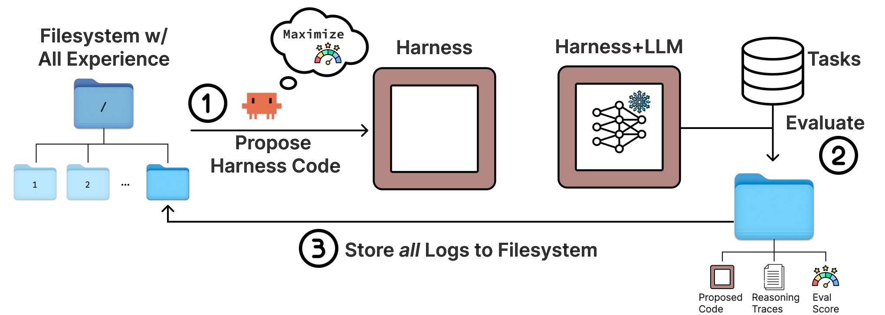
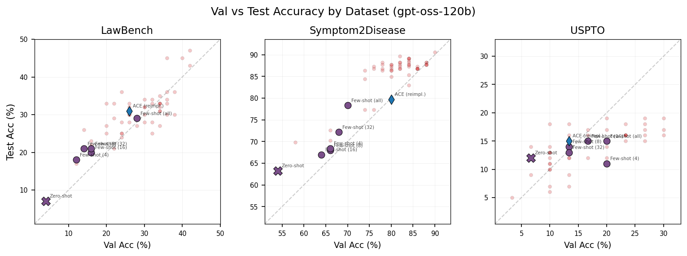

Meta-Harness: Outer-Loop Search over Harness Code with Full Execution-Trace Access
TL;DR
- "Meta-Harness: End-to-End Optimization of Model Harnesses" (arXiv 2603.28052; Yoonho Lee, Roshen Nair, Qizheng Zhang, Kangwook Lee, Omar Khattab, Chelsea Finn — Stanford + KRAFTON + MIT) automates harness engineering with the most minimal outer loop imaginable: a coding-agent proposer (Claude Code with Opus-4.6) gets unrestricted filesystem access to the source code, scores, and raw execution traces of every prior candidate harness, navigated with
grepandcatrather than ingested as a prompt. - The design bet is feedback bandwidth: prior text optimizers (OPRO, TextGrad, AlphaEvolve, GEPA, TTT-Discover) hand the proposer 0.002–0.026 MTok per iteration; Meta-Harness exposes ~10 MTok — one evaluation can produce up to 10M diagnostic tokens. The ablation says this is the ingredient: full-trace access reaches 50.0 median / 56.7 best search-set accuracy vs 34.6/41.3 for scores-only, and LLM-written summaries don't recover the signal (34.9/38.7).
- Three domains: +7.7 points over ACE on online text classification with ~4x fewer context tokens (48.6% vs 40.9%); a discovered BM25 retrieval harness lifting 200 IMO-level problems +4.7 points averaged over five models (four never seen during search); and TerminalBench-2 harnesses at 76.4% (Opus 4.6, above hand-engineered Terminus-KIRA's 74.7%) and 37.6% (Haiku 4.5, #1 among reported Haiku agents).
Why this matters
One nuance the thread mangles: the "up to 6x performance gap from the harness alone" is the paper's opening citation (SWE-bench Mobile, Tian et al. 2026), not something this paper proves — it's the motivating fact that harness choice can matter as much as weights. What the paper contributes is an answer to the question this tracker keeps circling: if harness engineering is real engineering, can an agent do it? Every prior attempt inherits machinery from text optimization — mutation operators, parent selection, reflective summaries — all of which compress feedback because raw feedback wouldn't fit in a prompt. The authors are fair about why: that compression is "a pragmatic scalability choice, not evidence that longer-range dependencies are uninformative." But it is exactly what breaks harness search. A harness is a stateful program whose early decision (what to store, when to retrieve) surfaces as a failure many steps later, and a scalar score or paragraph summary destroys the causal chain needed to trace it back. The fix is architectural: stop compressing. Put everything on disk, hand the proposer a terminal, and let a coding agent — the artifact class trained on exactly "navigate a big repo and find the bug" — decide what to read. It's the Bitter Lesson applied to prompt optimization, and the paper says so, citing Sutton.
The core idea
A harness \(H\) is a stateful program wrapping a frozen model \(M\): it builds prompts, the model responds, the harness updates its state. Running \(H\) on instance \(x\sim\mathcal{X}\) yields trajectory \(\tau\sim p_{M}(H,x)\) scored by reward \(r(\tau,x)\). The objective is the obvious one:
where \(H\) ranges over executable programs (here: single-file Python), \(M\) is fixed, and — when accuracy and context cost both matter — candidates are kept as a Pareto frontier instead of collapsing to one scalar.

Figure 2 from the paper: the whole method. Propose from the filesystem, evaluate against tasks, append all logs back to the filesystem.
What is deliberately absent is the search apparatus prior work considered necessary. Meta-Harness keeps a population and a Pareto frontier but imposes no parent-selection rule, no mutation-operator taxonomy, no archive summarization: the proposer inspects any prior harness and its traces, picks which failure mode to attack, and chooses between a local edit and a full rewrite.
What the proposer actually sees. Each evaluated candidate contributes a directory holding its source code, its scores, and its execution traces — prompts, tool calls, model outputs, state updates. The filesystem is "typically far larger than the proposer's context window," so it is queried through terminal tools (grep, cat, ls) rather than ingested as one prompt; selective access is the method, and the choice of a coding agent over a raw LLM follows directly, since something must decide what to open and validate its edits against the codebase. Instrumentation from the TerminalBench-2 run (10 iterations, Opus 4.6) shows it uses that freedom: a median of 82 files read per iteration (range 69–99), split 41% prior source code, 40% execution traces, 6% score/summary files, 13% other, referencing more than 20 prior candidates per step. The access pattern is, as the authors put it, non-Markovian: the proposer re-reads the majority of available history rather than conditioning on its most recent parent. Its outputs — not its diagnosis — are constrained by a single minimal "skill" file saying where to write harnesses and what it may not modify. The paper is upfront that this only became practical with early-2026 coding agents; the loop's simplicity is a bet that the method improves for free as coding agents do.
How it works
# Meta-Harness outer loop (Algorithm 1, plus Sec. 3 practical details)
Input: tasks X (search set only), frozen LLM M, coding-agent proposer P, iterations N
H <- initial population (strong hand-built baselines, e.g. zero-shot / few-shot / ACE)
D <- empty filesystem # one directory per candidate
for H_i in H: D <- D + {code, scores, traces of Evaluate(H_i, M, X)}
for t = 1..N: # typical run: ~60 harnesses over 20 iters
P queries D with grep/cat/ls # median 82 files/iter; code + raw traces
P forms failure hypotheses # "which earlier design choice caused this?"
P writes k new single-file harnesses # local edit or full rewrite, its choice
for H_new in proposals:
if H_new passes interface validation: # cheap smoke test, catches duds
D <- D + {code, scores, traces of Evaluate(H_new, M, X)}
return Pareto frontier of D # test set evaluated once, at the very end
The proposer never sees test-set results; its only signal is the search set and the traces logged there.
The TerminalBench-2 search log (Appendix A.2, quoted verbatim) shows why trace access earns its cost. Iterations 1–2 bundle plausible structural bugfixes with prompt-template rewrites; both regress sharply from a 64.4% Terminus-KIRA baseline (58.9%, 57.8%). At iteration 3 the proposer reasons that "the structural bugfixes were confounded with harmful prompt changes," reverts the prompt, tests the isolation, and loses far less (63.3%, −1.1pp) — confirming the confound. Iterations 4–6 keep probing the completion state machine, citing concrete trajectory evidence (agents stuck in 30–60 step verification spirals on configure-git-webserver after effectively solving the task), and keep regressing. After six straight regressions it pivots to a "purely additive" change: gather an environment snapshot in one shell command before the first LLM turn. That candidate wins; iteration 8 composes it with an earlier structural fix, and iteration 10 cites a lesson from a separate earlier search run. The final harness is Terminus-KIRA plus ~80 lines of bootstrap — working directory, /app listing truncated to 20 entries, language and package-manager versions, memory, guarded by a silent 15-second timeout — eliminating the 2–4 turns agents waste probing the sandbox. It gains on 7 of 89 tasks (largest: protein-assembly, path-tracing), all needing domain tooling whose availability can't be assumed. This is credit assignment over program history — exactly what scalar- or summary-fed optimizers cannot do.
The other discovered harnesses are similarly legible: for classification a label-primed query program (label primer, one coverage example per class, TF-IDF query-anchored contrastive pairs); for math a four-route lexical router (combinatorics/geometry/number theory/default) over math-aware BM25, autonomously merged from two successful lineages.
Results
The bandwidth table (Table 1) is the paper's framing device — the authors' best estimate of context available per optimization step in each method's largest reported setting:
| Method | History | Log content | MTok/iter |
|---|---|---|---|
| OPRO | window | past (solution, score) pairs | 0.002 |
| GEPA | summary | reflective feedback from rollout traces | 0.008 |
| Feedback Descent | summary | comparison + textual feedback | 0.012 |
| TextGrad | last | textual feedback on current artifact | 0.015 |
| AlphaEvolve | window | program database + eval scores | 0.022 |
| TTT-Discover | window | previous solution fragment | 0.026 |
| Meta-Harness | full | all logs and scores | 10.0 |
Roughly three orders of magnitude. The interface ablation (Table 3) tests whether that bandwidth is load-bearing, holding everything else fixed: scores-only (code + scores) gets 34.6 median / 41.3 best, with 26 runs beating zero-shot; scores + LLM-generated summaries gets 34.9 / 38.7 with only 23; full traces get 50.0 / 56.7 with 39. The median full-interface candidate beats the best candidate under either ablation, and the authors note summaries "may even hurt by compressing away diagnostically useful details" — adding them lowers both best accuracy and the above-baseline count relative to scores alone. Summarizing feedback for the optimizer is not neutral compression; it deletes the causal chain.
Compute-matched controls (Table 4, search set). All methods use the same proposer configuration (Opus-4.6 at max reasoning), select candidates solely on search-set performance, and get the same budget of harness evaluations. GEPA 32.6/40.2; Best-of-N 34.0/44.2 — independent samples from the seed with no search structure at all, the control for whether search matters; OpenEvolve 39.1/43.3; TTT-Discover 34.1/45.6; Meta-Harness 50.0/56.7. The uncomfortable detail is that Best-of-N's best candidate (44.2) beats GEPA's and OpenEvolve's and sits within 1.4 of TTT-Discover's: three of the four structured optimizers barely improve on unstructured sampling here. Only Meta-Harness clears the control decisively (+12.5 best, +16.0 median), matching the strongest prior optimizer's final accuracy within its first 4 evaluations — roughly 10x fewer.
Online text classification (GPT-OSS-120B; LawBench 215 classes, Symptom2Disease 22, USPTO-50k 180): best discovered harness 48.6% avg vs ACE 40.9% and MCE 40.0%, on 11.4K context tokens vs ACE's 50.8K and MCE's 28.5K. Because the objective is a Pareto preference rather than a scalar, the search yields a smooth accuracy–context frontier instead of one operating point.
Transfer — and the honest size of it. On nine unseen classification datasets the discovered harness averages 73.1% vs ACE's 70.2%, winning 6 of 9 on 7.3K context tokens vs ACE's 11.7K. That margin is +2.9, not the in-search +7.7, and it isn't uniform: ACE still beats it on FiNER (74.0 vs 67.0), FPB (96.7 vs 94.0), and Bank77 (83.3 vs 82.7); the big win is SciC (53.3 vs 40.7). On retrieval-augmented math, one harness searched with GPT-OSS-20B (109 candidates, 40 iterations, 250-problem search set) is evaluated on 200 IMO-level problems across five models: +4.7 over no retrieval, but only +1.3 over plain BM25, and dense retrieval at \(k{=}5\) reaches 38.1 against Meta-Harness's 38.8. The real advantage is consistency, not peak: dense retrieval and random few-shot each regress on multiple models (random few-shot averages −1.9), while Meta-Harness improves every model over no-retrieval — though it loses to plain BM25 on one of the five (Gemini-3-Flash, 46.3 vs 46.6).
The decontamination work is real. The 535,356-problem corpus comes from eight sources with filtering: NuminaMath-1.5 restricted to competition-math subsets; OpenMathReasoning deduplicated to one solution per problem (highest pass rate on an independent verifier), with any problem whose source matched an evaluation family (IMO, AIME, HMMT, SMT, USAMO, Putnam) removed before dedup; then the whole corpus decontaminated against every evaluation benchmark and the search set by exact prefix matching followed by fuzzy Jaccard at threshold 0.8, discarding either-way matches; then manual inspection of top BM25 retrievals for held-out examples. On TerminalBench-2 the analogous check is manual inspection plus regex audits for task-specific string leakage into evolved harnesses.
TerminalBench-2 (89 tasks): Opus 4.6 76.4% — #2 overall, above every hand-engineered agent the authors could reproduce (ForgeCode's 81.8% wasn't reproducible from public code); Haiku 4.5 37.6% vs Goose's 35.5%, #1 among reported Haiku agents. The only fully-automatic entries in the table.

Figure 7 from the paper: discovered strategies (pink) largely track the diagonal — search-set gains carry to the test set rather than being search-set mirages.
How it connects
- AutoDesign: Meta-Harness Optimization for Long-Horizon Agentic Design — the same thesis five months later in the design domain: a meta-level optimizer reads rollout feedback and directs a code agent to rewrite the harness. Meta-Harness is the cleaner ablation of why it works; AutoDesign adds cross-model scaffold-transfer evidence.
- Mendel Gödel Machine — same enemy, opposite philosophy of evidence. MGM curates it per self-edit (two-trajectory controlled comparisons); Meta-Harness un-curates it (everything on disk, agent chooses) — reconcilable, since agent-directed selective reading is compression at read time rather than write time.
- Rethinking the Evaluation of Harness Evolution — the standing null hypothesis (gains = repeated sampling + eval-set adaptation). Meta-Harness answers better than most: Best-of-N is the compute-matched sampling control (44.2 vs 56.7 best), and the OOD-classification and held-out-model math tables are the transfer evidence that critique demands. The TB2 experiment sits squarely inside the regime it targets.
- HarnessCompass — manages blind harness evolution with admissibility gates on what edits may contain; Meta-Harness manages it with richer evidence about what to edit, noting code-space overfitting is at least inspectable (brittle if-chains are visible in a way weight overfitting isn't).
- Living-Harness — the bounded counterpart, which lists Meta-Harness in its own table as the "harness code, no bounded gates" row: gated state updates versus unrestricted code rewrites, this paper betting on evidence richness where Living-Harness bets on commit discipline.
- Recursive Harness Self-Improvement — one level up: there the improver improves itself; Meta-Harness keeps its outer loop frozen. The authors' next step is co-evolving harness and weights, not the loop.
- No Universally Best Harness — if harness rankings flip across tasks, per-domain automated search is the natural consequence; Meta-Harness shows an agent can run it in hours rather than a team over a quarter.
Critical take
The honest core result is the interface ablation — traces beat summaries beat scores, by a lot — and it's the result most likely to generalize. The headline benchmarks need sorting. TerminalBench-2 performs search and final evaluation on the same 89 tasks. The authors defend this openly as a "discovery problem": public writeups already describe repeated benchmark-specific harness iteration on TerminalBench, and the benchmark is small and expensive enough that carving out a split "would materially weaken the search signal." Fair, but it leaves the number same-distribution, guarded by manual inspection and regex leakage audits rather than held-out data. Compounding it, the population is seeded from Terminus 2 (62.9%) and Terminus-KIRA (74.7%), so search starts one edit from SOTA and the winner is 80 additive lines on someone else's harness. (The appendix log also measures its Terminus-KIRA baseline at 64.4% while the main table reports 74.7%; the paper doesn't reconcile the two.) Cheap, safe and composable — but it bounds the claim: automated harness refinement at the frontier is demonstrated; invention remains open. Transfer deserves the same discipline: +2.9 OOD over ACE is a third of the in-search +7.7 the thread quotes, and +1.3 over vanilla BM25 is a modest gain on a strong simple baseline. The thread's "five completely held-out frontier models" is wrong: GPT-OSS-20B was the search model; four are held out. Everything is Claude Code + Opus-4.6, which the authors flag, and "the loop improves as coding agents improve" is a forecast, not a finding. Costs appear in wall-clock ("a few hours") but never in tokens; at ~10 MTok available per iteration and 82 files read per step, the proposer bill is not small.
If you remember three things
- Feedback bandwidth is the variable that matters: prior text optimizers give the proposer ≤0.03 MTok/iteration; Meta-Harness exposes ~10 MTok via a filesystem, and the ablation is unambiguous — raw traces 50.0/56.7 vs summaries 34.9/38.7 vs scores 34.6/41.3, summaries losing even to scores on above-baseline runs (23 vs 26). Summarizing feedback for the optimizer is where the signal dies.
- Minimal loop, maximal access: no parent selection, no mutation operators — propose/evaluate/log, with a coding agent reading a median 82 files per iteration across 20+ prior candidates and doing explicit causal credit assignment over program history.
- Weigh the transfer numbers, not the headlines: +2.9 OOD over ACE, +1.3 over BM25 on math, TB2 #1-among-Haiku with search-on-eval and near-SOTA seeding — enough to show agent-run harness search works at the frontier of hand-engineering, not that it replaces it.